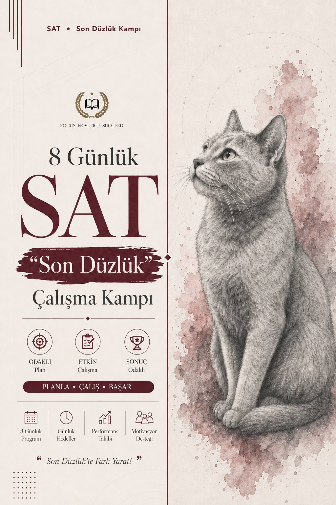

Sınava giden son düzlüğe (final stretch) sistematik bir program. İki track: Reading and Writing 8 gün, Math 8 gün. Her gün bir alana odaklanır, soru tipi analizini, çözüm stratejisini ve modülün sonunda iki bölümlük mini denemeyi içerir. Kamp bitince hangi alanın seni en çok zorladığını net görürsün.
Ödeme onaylandıktan sonra hesabına erişim açılır. Programa tarayıcıdan girilir, indirme gerekmez.
15 yılı aşkın süredir İngilizce eğitimi alanında çalışan bir öğretmen ve eğitmen. ELT alanında yüksek lisans sahibi olup akademik İngilizce, sınav İngilizcesi ve öğrenci koçluğu alanlarında uzmanlaşmıştır.
Digital SAT, IELTS, TOEFL, YDT ve YDS gibi sınavlara öğrenci hazırlama deneyimiyle, modern öğretim yöntemlerini sınav stratejileriyle birleştiren bir yaklaşım benimser. Materyaller gerçek sınav mantığına uygun, sadece anlatım değil soru çözme becerisine odaklı şekilde tasarlanır.
Daha Fazlası